☆つきは画像の一部で 有名な人物/文章/キャラクター/画像 などを記憶で描いていることがあるので注意。
あけましておめでとう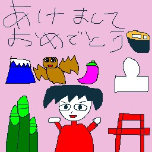 |
調子が悪い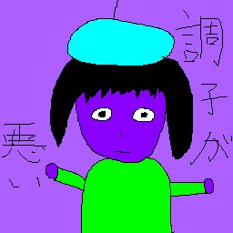 |
おたんじょうびおめでとう！！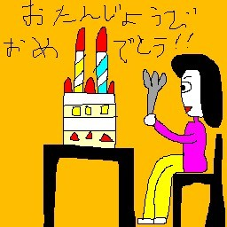 |
忙しい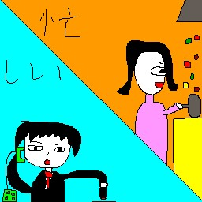 |
開かない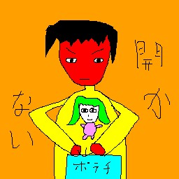 |
☆向かってます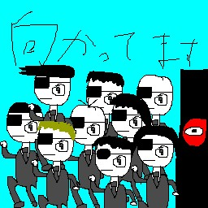 |
ダー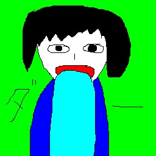 |
喜びの舞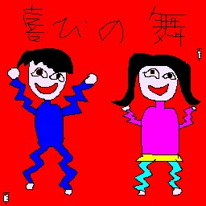 |
どこ？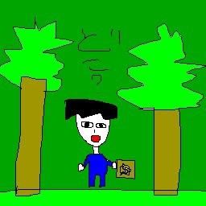 |
おわった～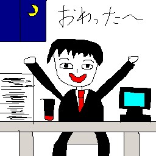 |
ゆるして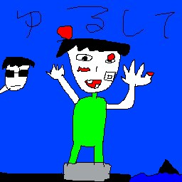 |
ひま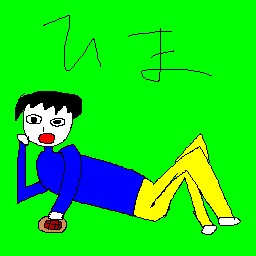 |
がんばれ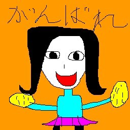 |
いいね！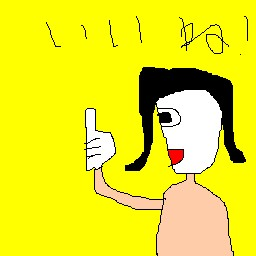 |
ばいばい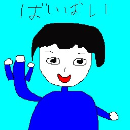 |
助けて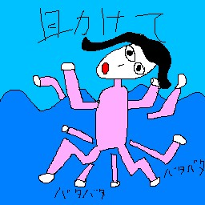 |
変顔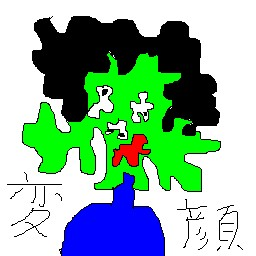 |
☆怖っ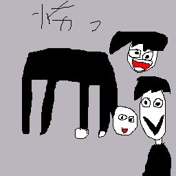 |
虫だー！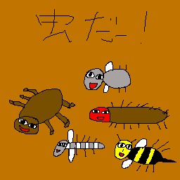 |
いってらっしゃい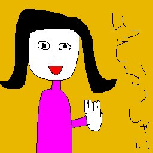 |
いやだ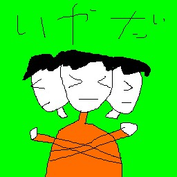 |
☆かわいくてごめん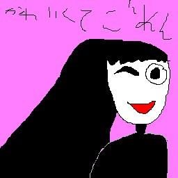 |
くっさ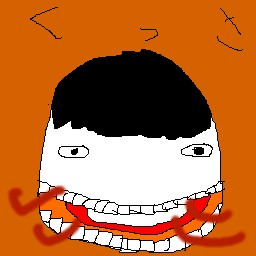 |
☆はっくしょん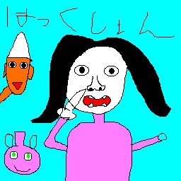 |
まだ？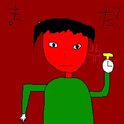 |
まかせます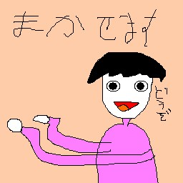 |
ちょっとまって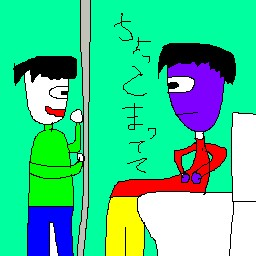 |
めんど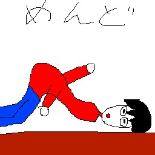 |
☆奇跡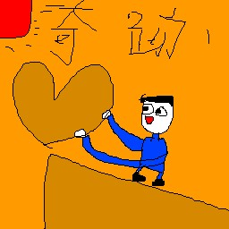 |
もぐもぐ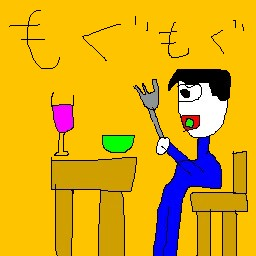 |
☆月が綺麗ですね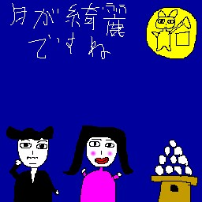 |
だめ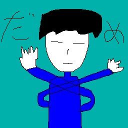 |
いってきます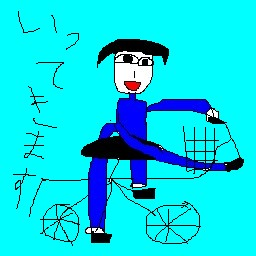 |
おはよー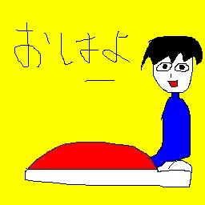 |
おーい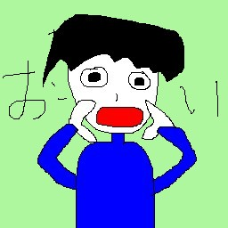 |
おいっ！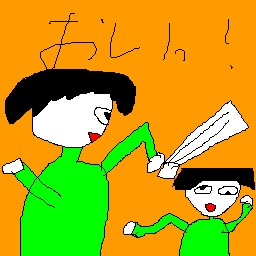 |
OK！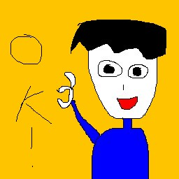 |
おかえり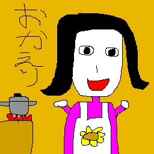 |
おねがい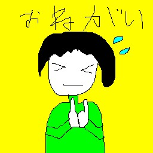 |
おつかれ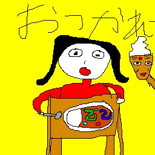 |
おやすみー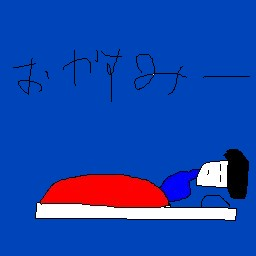 |
問題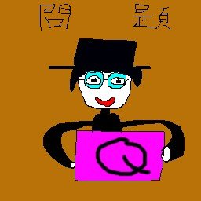 |
☆はやく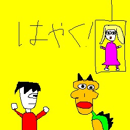 |
雨です |
☆論破 |
ごめん |
集中しています |
ただいまー |
・・・ |
ありがとう！！ |
おわった |
うまい |
うれしーのLINEスタンプ画像 「うれしー」")
|
ざんねん |
きっも！ |
事件！ |
☆キターーーーーー！ |
☆YES！のLINEスタンプ画像 「YES！」")
|
NO！ |
ブサイク |
かっこよ |
きもちい～ |
☆古っ |
勝った！ |
☆負け... |
☆運動中 |
八方美人 |
☆huh? |
諸行無常 |
魑魅魍魎 |
うらめしや～ |
うらやま |
☆かわよ |
つまんな |
☆うっそぴょーん |
☆きゃー |
カモー |
☆さみしい... |
絶体絶命 |
☆思考中... |
クビ |
☆ひらめいた |
☆天才！！ |
☆鉄拳制裁 |
☆どんちゃん騒ぎ |
桜花爛漫 |
☆安全第一 |
☆へぇー |
☆いつもより多く回っております |
☆どっち? |
手洗いうがい |
鶏口牛後のLINEスタンプ画像 「鶏口牛後」")
|
鶴の一声 |
雀の千声 |
良薬は口に苦し |
千里の道も一歩から |
☆決めポーズ |
☆縺ゅ°縺輔◆縺ｪ |
☆見ちがえたのLINEスタンプ画像 「見ちがえた」")
|
のアメトーーク！のお題「爪をとぐ猫」")
のアメトーーク！のお題「床を拭く人」")
でAIによる画風変換「安全第一+レオナルド・ダヴィンチ」")
の「私はロボットではありません」 「任天堂のキャラクターを選択")
を描く「年賀状」")
のUnity版「画伯の展覧会」で使った絵 「サハラ砂漠」")